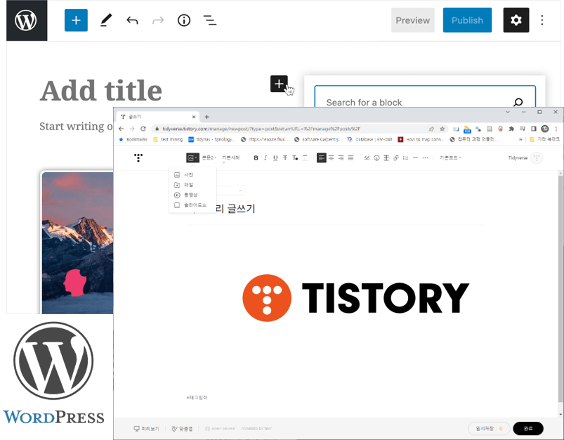

1 문서 컴파일러 1
Quarto 는 Pandoc에 기반한 오픈소스 과학기술 출판시스템이다. 하지만 특정 언어에 종속되지 않고 R, 파이썬, 쥴리아, 자바스크립트(Observable JS) 를 지원하고 있으며 이를 통해 다음 출판 저작물 작성이 가능하다.
크게 세가지 부분에 대해 출판시스템에 대한 고민이 필요하다.
- 콘텐츠(Content): 저작과 관련된 문서 내용
- 디자인(Design): 출판 결과물에 대한 외양(Look and Feel)
- 형식(Format): 출판물 최종 산출물
Quarto 는 Literate Programming System 으로 다양한 언어를 지원하고 다양한 출판결과물을 연결시키는 핵심 엔진으로 Pandoc 을 사용한다.
| Computations | 문서 저작 | 출력물 |
|---|---|---|
| Python, R, Julia, Observable JS | Pandoc, 마크다운 (Markdown) | 문서, 웹사이트, PPT, 책, 블로그등 |
좀더 구체적으로 전문적인 출판을 위해서 문서저작에 다양한 기능과 함께 출판 산출물을 지원한다.
- 문서저작(pandoc): 마크다운, 수식, 인용, 서지관리, 콜아웃(callout), 고급 layout 등
- 출판산출물: 고품질 기사(article), 보고서, PPT, 웹사이트, 블로그, (HTML, PDF, MS 워드, ePub 등) 전자책
2 Single Sourcing 출판저작
데이터 사이언스 출판저작에 다소 차이는 있지만 출판에 대한 대체적인 방식은 유사할 것으로 보인다. 즉, Single Sourcing 을 콘텐츠 저작, 디자인, 최종 출판물 관리까지 일원화되어 자동화되어 체계적으로 관리된다면 중복되는 낭비는 물론 재현가능성도 높여 과학기술 출판저작물로 가장 이상적으로 간주되고 있다.


3 작업흐름
기존 R .Rmd, 파이썬 .ipynb 확장자를 갖는 작업흐름이 .qmd 파일로 단일화되는 것이 가장 큰 특징이다. 따라서 마크다운으로 콘텐츠를 작성하고 프로그래밍 코드를 R, 파이썬, 자바스크립트, 쥴리아 로 작성하게 되면 자동으로 계산을 수행하고 결과물을 마크다운으로 변환시키기 때문에 후속 작업을 신경쓰지 않고 원하는 결과물을 얻을 수 있는 장점이 있다.


4 주요 기능
| Feature | R Markdown | Quarto |
|---|---|---|
| Basic Formats | ||
| Beamer | ||
| PowerPoint | ||
| HTML Slides | ||
| Advanced Layout | ||
| Cross References | ||
| Websites & Blogs | ||
| Books | Quarto Books | |
| Interactivity | Shiny Documents | Quarto Interactive Documents |
| Paged HTML | pagedown | Summer 2022 |
| Journal Articles | rticles | Summer 2022 |
| Dashboards | flexdashboard | | Fall 2022 |
5 위지윅 vs 위지윔
신속하고 빠르게 누구나 짧은 학습을 통해서 문서를 저작하고 출판할 수 있는 방식은 아래한글 혹은 MS워드 워드프로세서를 사용하는데 이는 위지위그(WYSIWYG: What You See Is What You Get, “보는 대로 얻는다”)에 기초한 것으로 문서 편집 과정에서 화면에 포맷된 낱말, 문장이 출력물과 동일하게 나오는 방식을 말한다. 위지윅의 대척점에 있는 것이 위지윔(WYSIWYM, What You See Is What You Mean)으로 대표적인 것인 \(\LaTeX\) 으로 구조화된 방식으로 문서를 작성하면 컴파일을 통해서 최종 문서가 미려한 출판가능한 PDF, PS, DVI 등 확장자를 갖는 출판결과물을 얻을 수 있다.

5.1 블로그 저작 소프트웨어
개인용 컴퓨터가 보급되면서 아래한글과 같은 워드 프로세서를 사용해서 저작을 하는 것이 일반화되었지만 곧이어 인터넷이 보급되면서 웹에 문서를 저작하는 것이 이제는 더욱 중요하게 되었다. 전문 개발자가 아닌 일반인이 HTML, CSS, JavaScript를 학습하여 웹에 문서를 제작하고 출판하는 것은 난이도가 있다보니 워드프레스와 티스토리 같은 위지위그 패러다임을 채택한 저작도구가 사용되고 있으나 상대적으로 HTML, CSS, JavaScript을 조합한 방식과 비교하여 고급스러운 면과 함께 정교함에 있어 아쉬움이 있는 것도 사실이다.

5.2 Quarto
Quarto 는 10년전부터 시작된 knitr 경험을 많이 녹여냈고 위지윔 패러다임에 기초를 하고 있다고 볼 수 있다. RStudio를 IDE로 Quarto CLI와 함께 출판물을 저작한다면 편집기에 있는 Visual 모드가 있어 위지윅 패러다임도 문서저작에 사용이 가능하다. 특히, R, 파이썬, SQL, 자바스크립트 등 컴퓨팅 엔진을 달리하여 문서에 그래프, 표, 인터랙티브 결과물도 함께 담을 수 있는 것은 커다란 장점이다.

6 Quarto 해부
Quarto 저작은 크게 3가지 구성요소로 되어 있다.
- 메타데이터: YAML
- 텍스트: 마크다운
- 코드:
knitr,jupyter
상기 구성요소를 조합하게 되면 다양한 데이터 사이언스 웹사이트를 비롯한 출판물을 제작하게 된다.

6.1 YAML
메타데이터는 YAML인데 GNU처럼 “Yet Another Markup Language” 혹은 “YAML Ain’t Markup Language”을 줄인단어다.
---
key: value
------
format: something
---. . .
---
format: pdf
------
format: pdf
------
format: revealjs
------
format:
html:
toc: true
code-fold: true
---왜 YAML이 필요하게 된 것인가? YAML은 단순히 KEY: Value 에 불과한데 CLI를 이해하게 되면 왜 YAML을 사용하는 것이 유용한지 이해할 수 있다. 먼저 간단한 CLI 명령어를 YAML로 변환해보자.
quarto render document.qmd --to html---
format: pdf
---한단계 더 들어가서 좀더 많은 선택옵션을 넣어 고급 기능을 넣는 사례를 살펴본다.
quarto render document.qmd --to html -M code fold:true---
format:
html:
toc: true
code-fold: true
---6.2 마크다운
데이터 과학 문서 웹사이트에 “마크다운 기초”, “고급 마크다운”, “R 마크다운 실무” 를 참조한다.
6.3 코드
R, 파이썬, SQL, 자바스크립트 등 버그 없이 정상 동작하는 프로그램을 작성하여 포함시킨다.
6.4 YAML 코드편집
RStudio, VSCode IDE는 탭-자동완성(tab-completion)을 제공한다. 즉, 첫단어를 타이핑하고 탭을 연결하여 키보드를 치게되면 연관 명령어가 나와 선택하면 된다. 혹은 Ctrl + space 단축키를 치게되면 전체 명령어가 나온다.